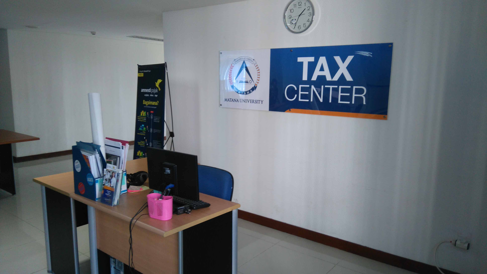

Tax Center
The TAX Center, or tax hub, located in the Noakhali Science and Technology University library, serves to assist students, especially those in the Accounting and Management programs. The TAX Center is also available on the Lobby Floor of NSTU. The TAX Center at Noakhali Science and Technology University provides comprehensive tax-related facilities.
For students of Noakhali Science and Technology University who want to learn more about global taxation, the TAX Center is the perfect place to visit. In addition to providing tax-related facilities, the TAX Center at NSTU also offers small-scale investment opportunities for students. So, for students who are interested in investing or enjoy exploring the world of investment, the TAX Center at Noakhali Science and Technology University is the ideal destination.